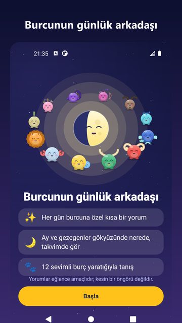
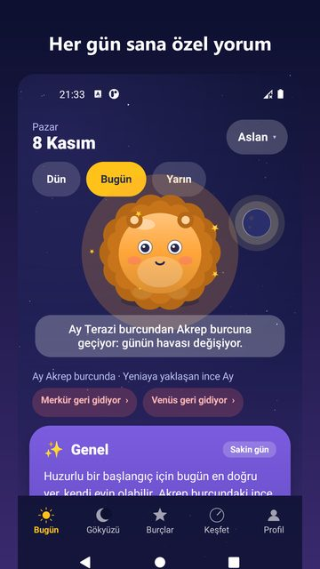
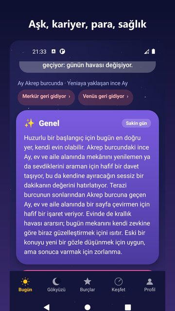
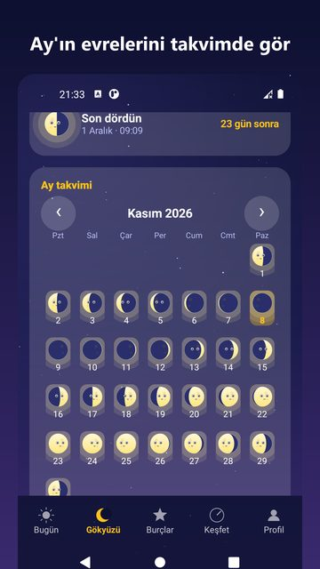
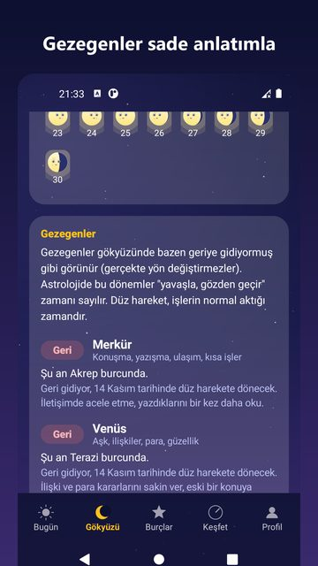
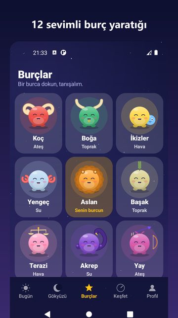
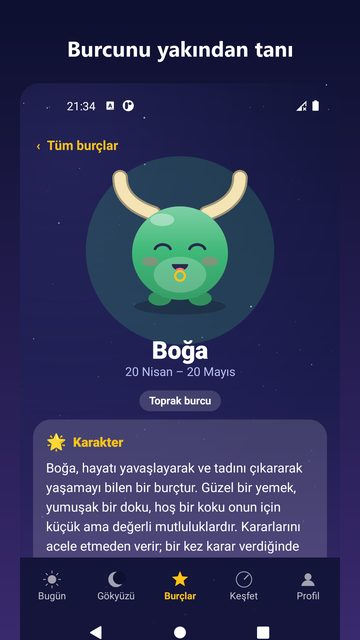
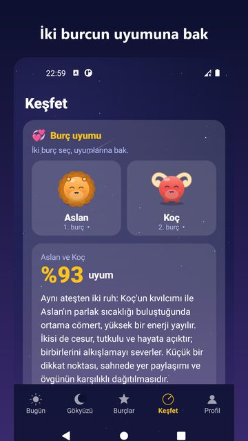

YENİ
Astrolings
Günlük burç yorumu, Ay takvimi ve gökyüzü; 12 sevimli burç yaratığıyla.
Burcunun günlük arkadaşı Astrolings, her gün sana özel kısa bir burç yorumu, Ay takvimi ve gökyüzü bilgisi sunar. Sevimli yüzlü 12 burç yaratığı ve yüzlü Ay ile astrolojiyi eğlenceli ve sade bir dille keşfet.

Ekran görüntüleri








Özellikler
Burcuna özel günlük yorum: genel, aşk, kariyer, para ve sağlık kartları
Her alan için 1-5 yıldız puanı, şanslı sayı ve şanslı renk
Günün sözü ve günün tavsiyesi
Dün, bugün ve yarın yorumları
Başka bir burcun yorumuna göz at; kendi burcun hep sabit kalır
Ay'ın bugünkü evresi ve hangi burçta olduğu
Sıradaki yeniay, ilk dördün, dolunay ve son dördün tarihleri ve saatleri
Ay evrelerini gösteren aylık takvim
Merkür, Venüs, Mars, Jüpiter ve Satürn: gezegenler geri mi gidiyor, düz mü? Terimler olmadan, ne anlama geldiği sade bir dille anlatılır
Ay'ın burç geçişleri
Burç uyumu: iki burç seç; genel uyum yüzdesi, aşk, arkadaşlık ve iş birliği puanları ve yorumları gör (78 burç çifti)
12 burç için karakter, güçlü yanlar, aşk, iş hayatı, element, yönetici gezegen, taş ve renk bilgileri
Doğum gününü seçerek burcunu bul (yıl sorulmaz)
Doğum yılından Çin burcunu öğren
Seçtiğin saatte günlük bildirim
Ana ekrana eklenebilen iki widget: bugünün yorumu ve Ay evresi
Yaratıklı günlük kartı arkadaşlarınla paylaş
Küçük, normal ve büyük yazı boyutu; kolay ve sade arayüz
Hesap yok, kayıt yok. Gökyüzü hesapları telefonunda yapılır ve çoğu özellik internetsiz çalışır
Astrolings eğlence amaçlıdır. Yorumlar öngörü ya da tavsiye değildir; önemli kararlarını bunlara dayandırma. Uygulama ücretsizdir ve altta küçük bir reklam gösterir. Tek seferlik küçük bir ödemeyle reklamları tamamen kaldırabilirsin. Sorun ya da öneri için nesim.razon@gmail.com adresine yazabilirsin. Burcunla her gün bir adım daha keyifli!